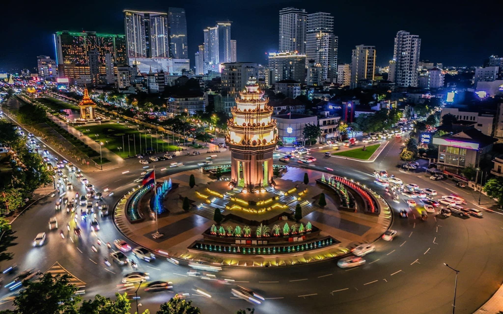

ការពិពណ៏នាអំពី ខេត្តនីមួយៗនៅក្នងប្រទេសកម្ពុជា
ទំព័រដើម
តាកែវ
ភ្នំពេញ
កែប
ព្រះសីហនុ
ស្វាយរៀង
កំពង់ធំ
បាត់ដំបង
ពោធ៏សាត់
សៀមរាប
រតនគីរី
មណ្ឌលគីរី
ក្រចេះ
ត្បូងឃ្មុំ
កំពង់ចាម
ព្រៃវែង
កណ្តាល
ឧត្តរមានជ័យ
កំពង់ឆ្នាំង
កំពង់ស្ពឺ
បន្ទាយមានជ័យ
កោះកុង
ប៉ៃលិន
កំពត
ស្ទឹងត្រែង
ព្រះវិហារ
ទំនាក់ទំនង
រាជធានីភ្នំពេញ

ព័ត៌មានសង្ខេបអំពីរាជធានីភ្នំពេញ
> ភ្នំពេញ គឺជារាជធានីរបស់ព្រះរាជាណាចក្រកម្ពុជា ដែលមានប្រជាជនរស់នៅច្រើនជាងមួយលាននាក់ និង ជាទីក្រុងធំលំដាប់ទី១ ដែលមានប្រជាជនរស់នៅច្រើនជាងគេក្នុងប្រទេសកម្ពុជា ។ ក្រុងភ្នំពេញ ជាមជ្ឈមណ្ឌលពាណិជ្ជកម្មដែលប្រមូលផ្ដុំទៅដោយ សំណង់អាគារលំនៅដ្ឋាន សាលារៀន មន្ទីពេទ្យ វត្តអារាម ទីផ្សារដោះដូរមុខទំនិញ លើមុខជំនួញជួញដូរ ទាំងក្នុងស្រុក និង ក្រៅស្រុក ក្នុងលំហូរសាច់ប្រាក់ជាអតិបរមា ដែលរួមបញ្ចូលទាំងសេដ្ឋកិច្ចទីផ្សារ សង្គមកិច្ច និង នយោបាយ ដែលនាំឱ្យទីក្រុងទាំងមូលក្លាយជាទីកន្លែងរស់នៅប្រកបដោយភាពសម្បូរបែប ។[២]
> ក្រុងភ្នំពេញត្រូវបានបង្កើតឡើងដំបូងក្នុងរាជ ព្រះបរមរាជាទី១ នៃអង្គ ពញ្ញាយ៉ាត ដែលបានប្រកាសជាផ្លូវការ ក្នុងឆ្នាំ ១៤០០ នៃគ.ស ត្រូវនឹង ស.វទី១៥ ។ ក្រុងភ្នំពេញ បានចាប់ផ្ដើមសាងសង់ឡើងក្នុងឆ្នាំ ១៣៩៧ នៃគ.ស អំឡុងពេលដែលរាជធានីទួលបាសាន នាខេត្ត កំពង់ចាម ត្រូវបានទឹកជំនន់ជន់លិច ហើយព្រះរាជាបានផ្លាស់រាជធានីមកតំបន់ចតុមុខ ដើម្បីកសាងទីក្រុងនេះឡើង ដែលប្រើពេលសាងសង់អស់រយៈពេល ៣ឆ្នាំ ទើបញ្ចប់ក្នុងឆ្នាំ ១៤០០ នៃគ.ស ហើយទ្រង់បានប្រកាសរាជធានីថ្មីនេះថា "ក្រុងចតុមុខ មង្គលសកលកម្ពុជាធិបតី សិរីធរៈបវរ ឥន្ទបត្តបុរី រដ្ឋរាជសីមាមហានគរ" ដែលត្រូវបានហៅកាត់ថា "ក្រុងចតុមុខ" ។[៣]
> រាជធានីភ្នំពេញមានចំនួន 14 ខណ្ឌ ដែលជាការបែងចែករដ្ឋបាលក្នុងក្រុង :
- ខណ្ឌដូនពេញ
- ខណ្ឌចំការមន
- ខណ្ឌ៧មករា
- ខណ្ឌទួលគោក
- ខណ្ឌពោធិ៍សែនជ័យ
- ខណ្ឌដង្កោ
- ខណ្ឌមានជ័យ
- ខណ្ឌឫស្សីកែវ
- ខណ្ឌច្បារអំពៅ
- ខណ្ឌសែនសុខ
- ខណ្ឌបឹងកេងកង
- ខណ្ឌព្រែកព្នៅ
- ខណ្ឌកំបូល
- ខណ្ឌច្បារមន